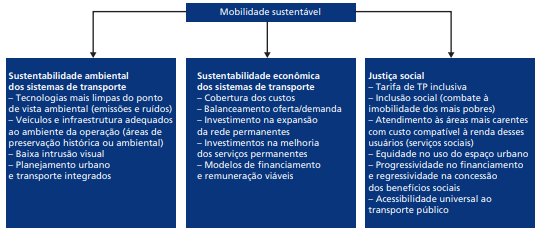

A partir do contexto descrito, muito se tem discutido no Brasil sobre a necessidade de se buscarem padrões de sustentabilidade para se aplicar no planejamento dos sistemas de mobilidade urbana. Pode-se pensar na mobilidade urbana sustentável dentro do conceito mais amplo do desenvolvimento sustentável, que se refere à promoção do equilíbrio entre a satisfação das necessidades humanas da geração atual, sem comprometer a proteção do ambiente natural e as gerações futuras. Dessa forma, assim como se trabalha o desenvolvimento sustentável nas três dimensões principais – econômica, social e ambiental –, o mesmo pode ser feito em relação aos sistemas de mobilidade (Figura 1).
SUSTENTABILIDADE AMBIENTAL: Do ponto de vista ambiental, o aumento e a participação do transporte público coletivo e também do transporte não motorizado na matriz modal de deslocamentos é de extrema importância. Modos coletivos de transportes apresentam gastos de energia e emissões de poluentes per capita, muito menores. Cidades com maior percentual de viagens com transporte público, bicicletas e a pé apresentam menores níveis de poluição atmosférica e sonora, além de serem mais funcionais do que as cidades com alto grau de uso de veículos motorizados privados. Desta forma, as políticas devem buscar maior sustentabilidade ambiental para os sistemas de mobilidade urbana.
SUSTENTABILIDADE ECONÔMICA: Além da sustentabilidade ambiental, os sistemas de mobilidade têm de apresentar um equilíbrio econômico-financeiro. Os custos dos serviços têm de ser apropriados corretamente pelo poder público, com políticas claras e transparentes de financiamento e custeio.
JUSTIÇA SOCIAL: A justiça social nos sistemas de mobilidade se refere basicamente aos princípios de acessibilidade universal, equidade nas condições de deslocamento e modicidade tarifária. A acessibilidade universal implica que os serviços de transporte tenham de atender a todos os cidadãos, ou seja, toda a população tem o direito de usufruir as oportunidades e os equipamentos das cidades. Para que isso ocorra, o sistema de transporte tem de ser dimensionado e planejado de forma abrangente, focando inclusive os grupos minoritários que apresentam dificuldades de locomoção e também os mais pobres que apresentam baixa capacidade de pagamento dos serviços.